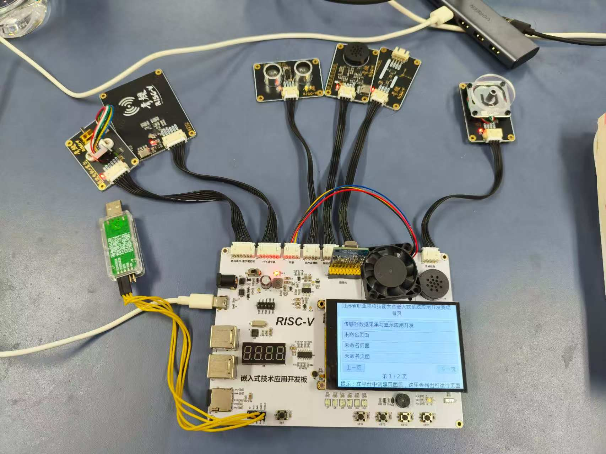
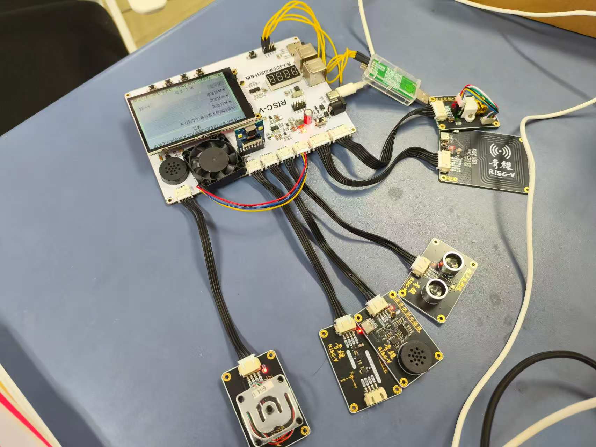

Branch 01
系统方案设计与任务拆解
先把竞赛任务拆清楚，再决定模块边界和开发顺序，这一步决定了后面联调会不会乱。
- 分析赛项需求，明确优先级和功能依赖关系。
- 划分应用层、平台抽象层、驱动层和硬件层，避免后续开发互相缠绕。
- 把“先跑通链路，再逐步优化”作为整体推进策略。
Embedded / Competition
这是一个面向省赛场景的嵌入式系统项目。对我来说，它最重要的不只是写出某个驱动， 而是在有限时间里，把任务分析、模块划分、底层驱动、多任务调度和整机联调真正组织成一个可运行的系统。

项目面向江苏省职业院校技能大赛嵌入式系统应用开发赛项，要求在规定时间内完成底层驱动搭建、任务调度组织和整机功能联调。 它考验的不是单个知识点，而是工程节奏、架构拆分能力和现场排障能力。
在我的实现里，这个项目不只是“驱动能跑”，而是搭成了一个基于 RT-Thread、LVGL 和 TensorFlow Lite Micro 的完整软件架构。 整个系统覆盖 22 种板载外设，并通过 12 个独立任务线程组织 7 大综合外设场景。
我负责竞赛任务分析、系统架构设计、模块功能划分与开发推进，完成从需求理解、代码实现到整机联调的完整流程。
除了底层驱动和外设联调，我还把应用层按任务拆成独立线程，并围绕 GUI 显示、传感器采集、音频、图像处理和端侧推理组织统一接口。
Branch 01
先把竞赛任务拆清楚，再决定模块边界和开发顺序，这一步决定了后面联调会不会乱。
Branch 02
项目不是单模块开发，而是多个外设与任务协同运行，所以我把 RT-Thread 作为系统组织骨架。
Branch 03
真正耗时间的是联调阶段。我需要在多个模块同时工作的情况下，快速找到阻塞点和异常源。
这里已经换成真实素材，先展示实物连接状态，再补一个可播放的视频入口。

这里已经接入真实演示视频，能够补足静态图片难以展示的启动过程、模块联动和现场运行状态。